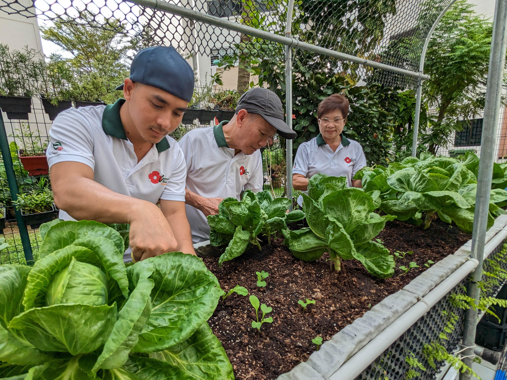
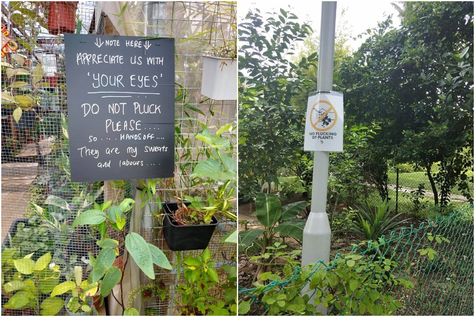
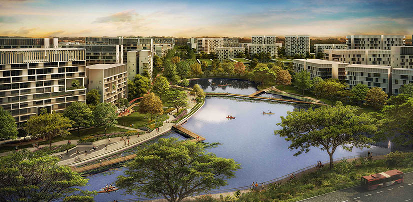

Tengah is Singapore's newest HDB town in two decades, built around five “green” districts that blend nature, sustainability, and community. 3,800 families, representing both younger and older residents, have already moved into the Plantation District since last year. As Tengah encourages its residents to live green, the community gardens play a pivotal role in encouraging residents to come together and learn about the importance of sustainable food production. Given the experiences with other HDB estates, community gardens tend to be utilised only by elderly residents and/or a small group of gardening enthusiasts. HDB hopes that as Geography students, you can provide possible ideas to encourage greater involvement from residents of all ages in Tengah to develop greater community spirit and live up to Tengah's ideals of green living.


| Question e.g. What is your age group? | Type/Format e.g. MCQ | Justification (Why is this question important?) |
|---|---|---|
| What is your age group? | MCQ | It informs us of their age group for us to know the general interests of each age group |
| On a scale from 1 to 10, how interested are you in attending community gardening events? | MCQ | It pairs with the data oi the age group to help us find out how interested in general this age group is |
| What factors would discourage you from volunteering or using the community garden? (e.g., time, location, lack of knowledge, etc.) | OEQ | Informs us how we can improve the activities and make beneficial changes. |
| What gardening tools or resources do you currently have, and which ones would you like to have access to in the future? | MCQ | We can plan the types of resources we have to allocate to lending equipment. |
| Do you think community gardens are accessible? Why or why not? | OEQ | It gives us info on the current situation of the community gardens. |
| Do you have any experience in gardening? | MCQ | For us to find out about how many people in the community knows about gardening for us to better plan for providing more if there is a large community or just finding ways to encourage residents to participate if there is only a small community |
| How well do you know your neighbours? Would you like to know them? | OEQ | We will be able to understand the social interactions between people. This may carry on to the community gardens. |
|
What features would make community gardens more interesting to you? (Select all that apply) - Diverse garden designs (e.g., keyhole gardens, vertical gardens, sensory gardens) - Inclusive plot configurations (e.g., individual plots, communal plots, raised beds) - Educational workshops and skill-sharing opportunities (e.g., gardening techniques, sustainable practices, healthy cooking) - Community events and social spaces (e.g., communal herb gardens, picnic spots, outdoor classrooms) - Sustainable practices (e.g., composting, rainwater harvesting, native plantings) - Accessible amenities (e.g., wheelchair-friendly paths, seating areas, clear signage) - Recognition and appreciation for volunteers (e.g., awards, public recognition, social media features) |
MCQ | It tells us how we could attract more people and make changes that can benefit everyone or at least majority of them. |
| What types of plants do you grow or would like to grow? | OEQ | We can understand the plants that may interest the people. |
| On a scale of 1-10, how free are you? | MCQ | This allows for an understanding of the availability of the residents. |
|
What do you feel are the biggest challenges you face in community gardening? (Select all that apply) - Limited time or commitment - Lack of gardening knowledge or experience - Insufficient tools or resources - Difficulty accessing the garden (e.g., location, transportation) - Physical limitations or accessibility issues - Inadequate support or guidance from the community - Weather conditions or seasonal changes - Conflicts with other gardeners (e.g., communication, shared space) - Maintenance or upkeep of the garden - Other (please specify) |
MCQ | We can use this to find out how often residents do community gardening in their neighbourhood |
| What do you know about community gardening? | OEQ | To find out what the general public who have no experience in gardening know about community gardening to try and understand why they aren't trying to learn gardening |
| How interested in gardening in general are you? | MCQ | Another factor to find out why the community does not have majority of community gardeners |
Other than just because of the Tengah Town Plan to become a blend of urbanisation and it's residents, these gardens not only connect people with nature but it also connects people with each other, and even connecting them with their health; examples like better air quality and a better biodiversity in their neighbourhood.
Connecting everyone in the community can encourage more interactions and foster a sense of belonging and bonding, helping each other find like minded individuals and knowing each other better through common interests, and even expanding social networks.
These gardens are also a way to improve mental health by relieving stress for people who enjoy doing what they do as a hobby and even people who admire what the community has made. Gardening encourages outdoor activity for a better well-being.
These community gardens are shared spaces allocated in HDB estate parks, carpark roofs and even schools under the Community in Bloom CIB program by NParks. These spaces are residents' go-to place if they like to grow plants, flowers and even vegetables. These spaces are often organised by the local authorities such as the Regional Committee RC or even groups and organisations. Some of these spaces also focus on food production, while others emphasize nature appreciation, education and wellness.
Ever since Singapore faced supply chain disruptions caused by Covid 19, Singapore has introduced its 30 by 30 plans which include producing 30% of food demands locally by 2030, from vegetable, egg and fish farms to even alternative proteins like plant-based meats. This is of course, only one of Singapores three sources of food security, the other two being imported food and overseas farmed crops being exported to Singapore. With all that, community gardening is seen as a possible fourth basket to food security and a step to the 30 by 30 goal. 86 percent of leafy vegetable demands are made up from imports, while local production and overseas exports make up the remaining 14 percent. A boost is foreseen in Singapore's food resilience by significantly increasing the number of local productions in unused spaces. Up to 661 hectares of land can be amassed from all of the HDB roofs according to an earlier study. With all this, there still stands a line of defence from the possible fourth basket of food security from our community gardens (Montesclaros et al., 2025)

While the advantages of a community garden as one of Singapore's pillars to food security, there are some disadvantages. To many crop farmers especially insects are a big issue to the vitality of planted crops, which can be solved with some nets and bags. However, community gardens being shared spaces, become a place of thievery; gardeners spend all their time on this niche hobby, sometimes attempting to plant certain crops that arent commonly known to be easy to plant. Since these places are open to the public, there are bound to be people who walk by and admire these crops, pluck some home and some cases even take the entire plant with them. This breaks the community spirit and even reduce the group of community gardeners as it may be frustrating for many, this can greatly effect Singapore's food resilience if community gardens were to become fourth basket for Singapore's food security. (Wong, L., 2024)
With all these plans, there comes some limitations faced by community gardens in Singapore. One of the biggest problems is land constraints. Space in Singapore is one of the biggest challenges in all aspects due to the country's limited space that restricts the number of and size of these community gardens being build or allocated.
Maintenance challenges also arise as gardening requires regular upkeep such as constant monitoring for pests and in a more commonly known issue, dengue outbreaks in the community. There may also be inadequate water supplies, poor soil quality and even the lack of funding for tools required. There also comes apoint where community engagement in community gardens are low, which leads to underutilised spaces.
Overseas, community gardens serve various purposes depending on local needs. The United Kingdom emphasizes sustainability, biodiversity, and mental well-being, integrating gardens into housing estates and public spaces. Australia incorporates community gardens into parks, promoting permaculture and native plant conservation. In Japan, rooftop and vertical gardens help maximize limited urban space while mitigating the urban heat effect. Meanwhile, the Netherlands focuses on environmental education and innovative urban farming techniques, integrating gardens into city planning.
Other successful community gardens have come up in Singapore and overseas such as Serangoon North community garden or Wasatch Community garden in America. Both of them showcase the ability for community gardens to bring a community together. In Singapore, they practice mentorship. Here they ensure that newer or older members get information they need to help them to learn more about community gardening. Together with that, they also practice the use of technology in their gardening. This allows them to be up to date with what is used currently. As for America, they practice meetings and give resources to the people. These practices allow for the barrier of money and communication to not be the limiting factors.
Specific numbers of population projections for Tengah have not yet been released, however from its substantial land area, it is suggested that there could be a large population in the future. A close gauge would be Bishan which has a similar land area and even a population size of 83200 residents.
Tengah, just like the rest of the regions in Singapore, hope to and most likely will see a mix of young families, working adults and even retirees moving in as contruction works completes,
Tengah, just like the rest of the regions in Singapore, hope to and most likely will see a mix of young families, working adults and even retirees moving in as contruction works completes,
There is much of an issue in trying to bring back community spirits among residents of different estates as there are newer mixes of different people who need to be engaged in multiple ways. Residents do not look forward to wanting to volunteer in helping the community as it do not look forward to wanting to volunteer. In general, the need to find new ways to foster a lively community is as big as the need to adapt to the changing society by finding new ways to bring people of like minds from different communities together, and bringing each different group from different communities to form a new community, in hopes that we can all relive the 1960s again.
Firstly, we intend enhance community gardening by organizing farmers' markets to attract visitors and allow residents to sell or trade crops, fostering a small local economy. By supporting local produce, we also boost Singapore's food security. (Singapore Food Agency. ,n.d.)
Secondly, weekly cooking demonstrations by chefs can teach residents how to use homegrown ingredients. Additionally, partnering with NParks and the town council can provide resources like tools and expertise through talks. Joining the Community in Bloom program offers guidance on garden design, management, and site selection while supporting gardeners through educational resources, competitions, and ambassador initiatives. We could also implement a program similar to Live Well, Age Well to further engage the community. The implementation of these ideas will allow for a close knit community to be built through community engagement in activities such as:
- Talks by stakeholders like NParks

Our proposed solutions will have an impact on the residents in Tengah, especially the ones who are not that well versed in gardening. Here, they will be able to learn, understand, and develop a passion for gardening as well as familiarise themselves with the community. This will help the community to be close knit and strong.
Our proposed solutions community to be close knit and strong to all over Singapore if popular. Residents from other neighbourhoods may find these ideas interesting or see their results and may want to implement it too. From here, Singapore will be able to foster tight knit communities all over.
Another possibility is that Singapore's food security will improve. The increase in community gardening will allow for more self sufficiency in Singapore and more knowledge in the field of gardening. Singapore will be able to hit its 30 by 30 plan. Our leafy vegetable local production will be able to increase from the current 14%. (Singapore Food Agency, n.d).
Geographical concepts: sustainability, food security, and community development
| W\M | Jan | Feb | Mar | Apr | May | Jun | Jul | Aug | Sep | Oct | Nov | Dec |
|---|---|---|---|---|---|---|---|---|---|---|---|---|
| Week 1 | Farmers Markets, Community In Bloom and Nparks collaboration | Cooking shows and talks | Farmers Markets | Cooking shows and talks | Farmers Markets | cooking shows and talks | Farmers Markets | cooking shows and talks | Farmers Markets | Cooking shows and talks | Farmers Markets | cooking shows and talks |
| Week 2 | Community In Bloom and Nparks collaboration | |||||||||||
| Week 3 | Community In Bloom and Nparks collaboration | |||||||||||
| Week 4 | Community In Bloom and Nparks collaboration |
The farmers' markets should be done in the first week of every 2 months. It will last for a week so people have enough time to choose and buy the items that they want.
The other idea is to have cooking shows and talks. These will be held every other month on the first Saturday of the month as most people will be free to join the show, allowing us to amass a larger audience. We would prefer to have the show every Saturday but it may not be feasible.
We would prefer to partner with organisations like Community In Bloom and Nparks as fast as possible (within the first week)in order to get funding and manpower for our events and activities. We are not able to start events like the farmer's market without the support of the organisations due to lack of funding and manpower.
Ministry of Sustainability and the Environment. (n.d.). SG Eco Fund: About. https://www.mse.gov.sg/take-action/sgecofund/about
Housing & Development Board. (n.d.). Lively Places Fund and Challenge. https://www.hdb.gov.sg/community/getting-involved/lively-places-programme/lively-places-fund-and-challenge
South West Community Development Council. (n.d.). Green Spaces. https://southwest.cdc.gov.sg/what-we-do/for-environment/greenspaces/
South East Community Development Council. (n.d.). Sustainable Living South East. https://southeast.cdc.gov.sg/what-we-do/future-ready/sustainable-living-south-east/
National Parks Board. (n.d.). Community Gardens. https://gardeningsg.nparks.gov.sg/get-involved/community-gardens/
National Parks Board. (n.d.). Introduction to Community Gardening (PDF). https://gardeningsg.nparks.gov.sg/files/introduction%20to%20community%20gardening.pdf
Channel NewsAsia. (2024, January 10). Could community gardens play a role in boosting Singapore's food security? https://www.channelnewsasia.com/today/voices/could-community-gardens-play-role-boosting-singapores-food-security-4878376t
Wong, L. (2024, February 2). The plot thickens as thieves plunder community gardens. The Straits Times. https://www.straitstimes.com/singapore/the-plot-thickens-as-thieves-plunder-community-gardens
The Straits Times. (2024, March 3). Foster a new kampung spirit. Retrieved https://www.straitstimes.com/opinion/foster-a-new-kampung-spirit
Singapore Food Agency. (n.d.). Supporting local produce. Singapore Food Agency. https://www.sfa.gov.sg/singaporefoodstory/supporting-local-produce
Singapore Food Agency. (n.d.). Grow local. Singapore Food Agency. from https://www.sfa.gov.sg/singaporefoodstory/grow-local
Montesclaros J, Teng, P. (2024, January 10). Could community gardens play a role in boosting Singapore's food security? https://www.channelnewsasia.com/today/voices/could-community-gardens-play-role-boosting-singapores-food-security-4878376